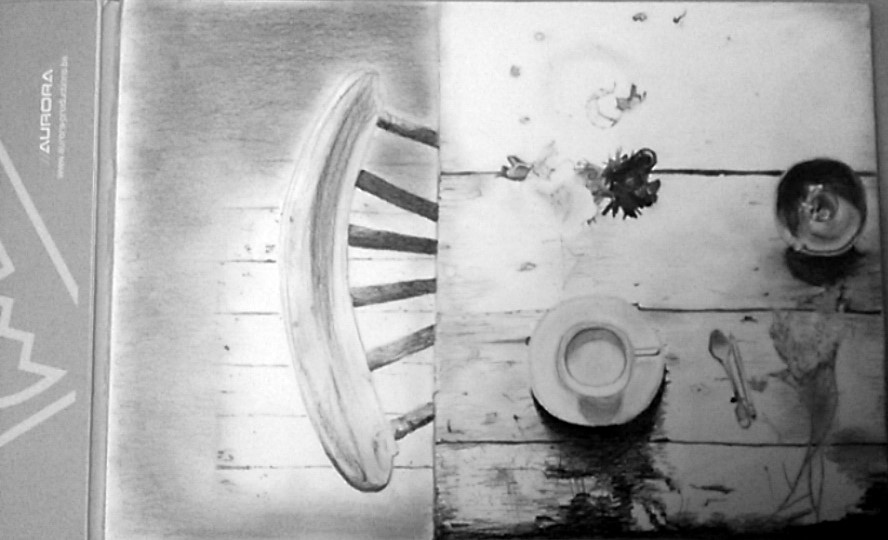

Ik ben Yoni Drijkoningen, 19 jaar en woon in Laakdal, België.
Momenteel studeer ik de richting Grafische en Digitale Media aan de AP hogeschool te Antwerpen. Ik heb voor deze studierichting gekozen omdat ik erg creatief ben en dit later ook in mijn job wil verwerken. Computers hebben me ook altijd geïnteresseerd dus dit was ook een aspect waardoor ik deze studierichting gekozen heb.
Ik ben nog niet afgestudeerd, maar heb al een aantal projecten gemaakt die je op deze website kan terugvinden! Twijfel zeker niet om mij te contacteren voor verdere informatie!
Fotografie
Hier kan je mijn fotografische werken terugvinden.
3D Afbeeldingen
Ik maak ook erg graag 3D-obkecten. Deze kan je onderaan terugvinden.
Illustraties
Tekenen doe ik al erg lang, hier vind je een collectie terug van mijn illustraties.

Je kan meer te weten komen over mij of met me in contact komen via mijn facebook- of instagram pagina. Bezoek ze door op de icoontjes te klikken.